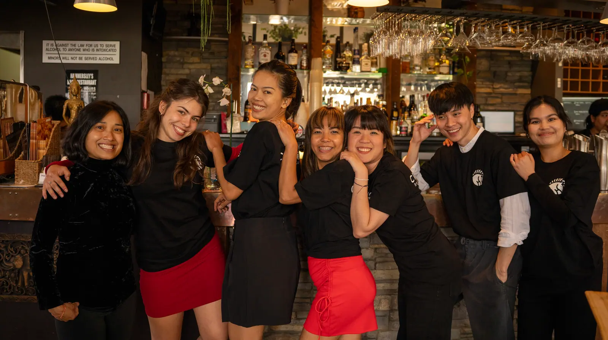
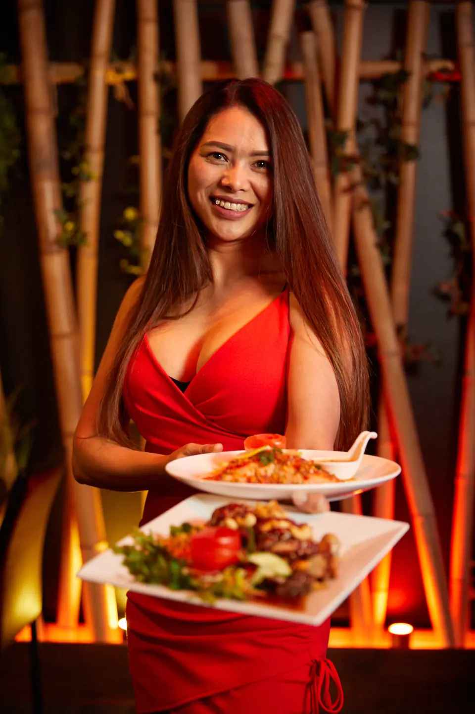
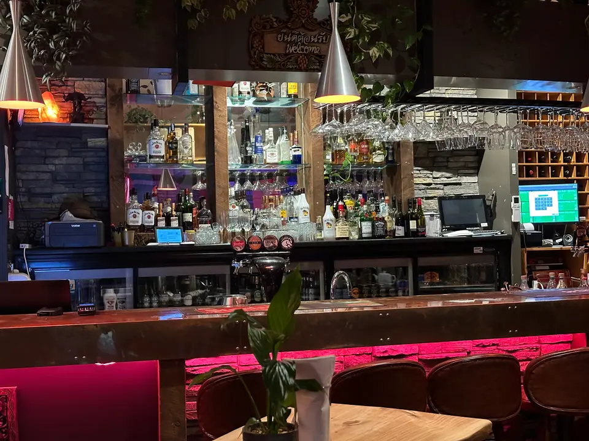
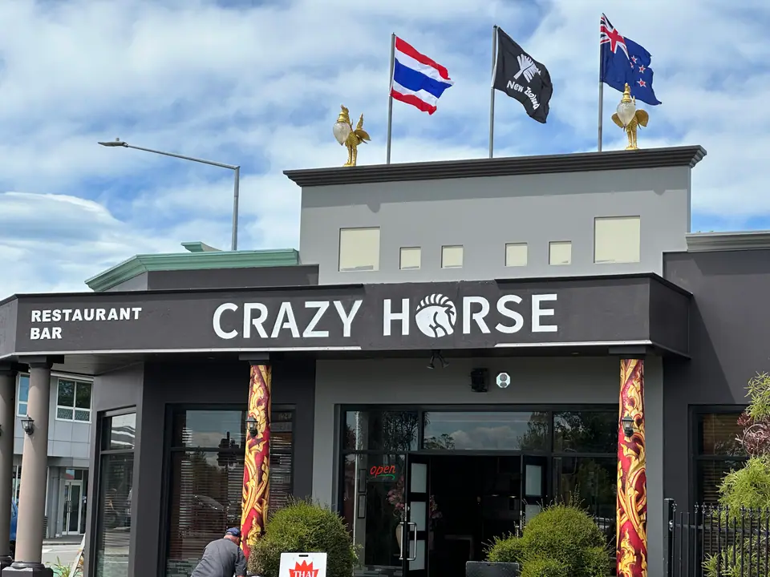
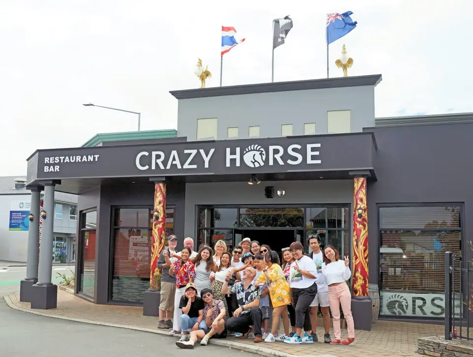

Bar, grill & Thai fusion · Christchurch
Great food, great feeling.
Where the food has soul and an experience to come back for.
- Now
- HoursMon to Sun 11am–11pm
- Address8 Shirley Road, Christchurch
- Phone+64 3 385 0004
Why Crazy Horse?
A name born from adventure, friendship, and a touch of crazy.
In 2014 two friends, a Kiwi and a Thai, lost their way in a bamboo forest north of Chiang Mai and found it again by the ears of a rock called Crazy Horse. Three years later Jules and Jummi took over Thai Orchid and opened its sibling, Crazy Horse.


Hammersley's bar
Bar, grill & fusion
The old Hammersley Engineering office on this corner became Hammersleys Bar some 30 years ago. Today it opens 7 days from 11am.
Corner of Hills & Shirley Road
Find us on Shirley Road
| Monday | 11am–11pm |
|---|---|
| Tuesday | 11am–11pm |
| Wednesday | 11am–11pm |
| Thursday | 11am–11pm |
| Friday | 11am–11pm |
| Saturday | 11am–11pm |
| Sunday | 11am–11pm |
Address8 Shirley Road, Christchurch
Phone+64 3 385 0004
- Off-street parking on the corner of Hills & Shirley Road.
- Kitchen 11am to 3pm and 5pm to 9pm, until 9:30pm on Friday and Saturday.
- Quiz on Wednesdays, blues on Thursdays, karaoke or open mic on Fridays and parties on Saturdays.
- Takeaway and functions: call +64 3 385 0004.

